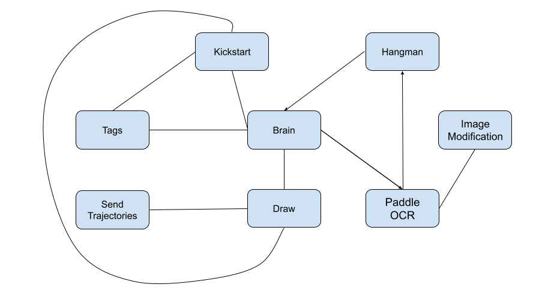

Brief Overview
The goal of this group project was to make a 7-DoF Pamda Arm facilate the game of hangman with a human in the loop. The peoject showcases skills in ROS2, computer vision, manipulation and robot dynamics.
Video demo
Team Members
- Graham Clifford
- Ishani Narwankar
- Abhishek Sankar
- Srikanth Schelbert
- Ananya Agarwal
Game Rules and project sequence
The game is played with a human in the loop.
- The robot thinks of a five letter word.
- In the kickstart sequence robot draws the blanks for the letter of the words and five possible wrong guesses, it even draws a noose to hang the man on.
- The human guesses a letter.
- If the letter is in the word, the robot draws the letter in the appropriate blank(s).
- If the letter is not in the word, the robot draws a body part on the hangman.
- The human guesses another letter or the entire word.
- And the game continues untill all wrong guesses are exhausted or human guesses the right word.
Approach
The robot uses a combination of computer vision and manipulation to play the game. The robot uses a camera to detect the human's guesses and the word. The robot then uses inverse kinematics to move the arm to the appropriate position to draw the letter or the body part. The robot uses forward kinematics to move the arm to the appropriate position to draw the letter or the body part. The robot uses forward kinematics to move the arm to the appropriate position to draw the letter or the body part. The robot uses forward kinematics to move the arm to the appropriate position to draw the letter or the body part. The robot uses forward kinematics to move the arm to the appropriate position to draw the letter or the body part. The robot uses forward kinematics to move the arm to the appropriate position to draw the letter or the body part. The robot uses forward kinematics to move the arm to the appropriate position to draw the letter or the body part.
Nodes
The image below shows our system architecture and how the nodes communicate with each other.
Task of each node is as follows:
- Brain: This node is the main node that controls the game. It starts by calling services offered by the Tags node to detect the word and then calls a series of services from respective nodes to keep the game going.
- Tags: This is the node in the entire system that knows where everything is in the world. (Main responsibility in the project)
- Kickstart: The node draws the blanks and noose on the board.
- Image Modification: Taking in the image of the player, it modifies and rectifies the image to be optimal for Paddle OCR to make a guess.
- Paddle OCR: Receiving the rectified image, it uses the PaddleOCR ML model to read the letter/word written on the board.
- Draw: Given a list of points for a letter, it draws them on the board. It also checks for the force applied by the board; if force is below a threshold, it moves the marker towards the board and vice versa, providing more reliable writing.

Custom Python Franka API
In order for this project to be viable, a main task our team accomplished was writing a custom Python API for the robot to be able to move in space without issues with singularities. This library also includes custom functions to run the force on the end effector for the control.
The following capabilities were granted with the implementation of our functions:
- Calculating Inverse Kinematics: Achieving the joint positions for a given pose.
- Calculating Torques/Forces: Determining the torques/forces on the end effector.
- Queueing Poses: Creating a trajectory by queuing poses.
- Planning and Executing: Handling both cartesian paths and MoveIt movements to given points.
- Replanning Paths: Dynamically replanning paths that violate the force admittance control.
Optical Character Recognition
The OCR pipeline employed the use of the open-source PaddleOCR toolkit due to its speed and accuracy. To cater to the requirement of processing both single letters and full words written by the player, ensuring effective OCR reading in both scenarios, we implemented the following approach:
- By processing two image feeds, each optimized either for single letters or full words,
- The pipeline ensures that the OCR is capable of reading both effectively.
- The result is a high-confidence guess that can be passed to the hangman node.
Tags Node
This section of the project encompasses my primary role. The Tags Node is responsible for understanding the spatial layout of the environment, including the board's position, the position of each letter, and the body parts of the hanging man on the board.
My Tasks:
- Performing eye-in-hand camera calibration to determine the camera's position relative to the robot.
- Using April Tag to localize the board with respect to the camera and, consequently, the robot arm.
- Completing the Tags node to offer relevant services so that every other node knows where it should write on the board.
Services Offered by Tags Node
- calibrate_service: Search for tag 11 and create a board frame relative to that. First, it moves to a position where the camera can see the April tag. Then it waits for an updated transform and creates a board transform.
- where_to_write: Give the pose of the end-effector to write a particular letter. The service takes parameters like the mode (indicating whether it's for the right letter, wrong letter, or drawing), the position of the letter, trajectory coordinates (x, y), and onboard status. It then provides the initial standoff position for starting the letter off-board and a list of poses needed to write the letter.
- update_trajectory: When the threshold force is reached and the marker needs to be moved into or out of the board, this service is called. It takes a list of poses and a direction indicator (whether to move towards or away from the board) as input. It then returns an updated list of poses based on the force control, adjusting the poses accordingly.
Challanges and Future Work
While initially developing a spring force control adapter for the Franka gripper as a fallback option, our team quickly transitioned to exploring force control, which significantly enhanced our project. By the demo day, we successfully utilized force control to draw characters on the board. However, further refinement of force control parameters could have improved the writing quality with additional tuning time.
In addition to enhancing force control, our team had a vision to introduce a dynamic element to the game where the robot would pick up different colored pens based on the player's guess accuracy. We designed and manufactured a pen stand, initiated gripper code finalization, and began calibrating the robot to an April tag on the pen stand. Unfortunately, time constraints prevented us from integrating this feature into the final gameplay.
As a final stretch goal, we aimed to introduce variability by changing the board's position between player turns. Leveraging April tags and force control, this enhancement would have been feasible with extra time to precisely calibrate the camera's position relative to the board and robot.